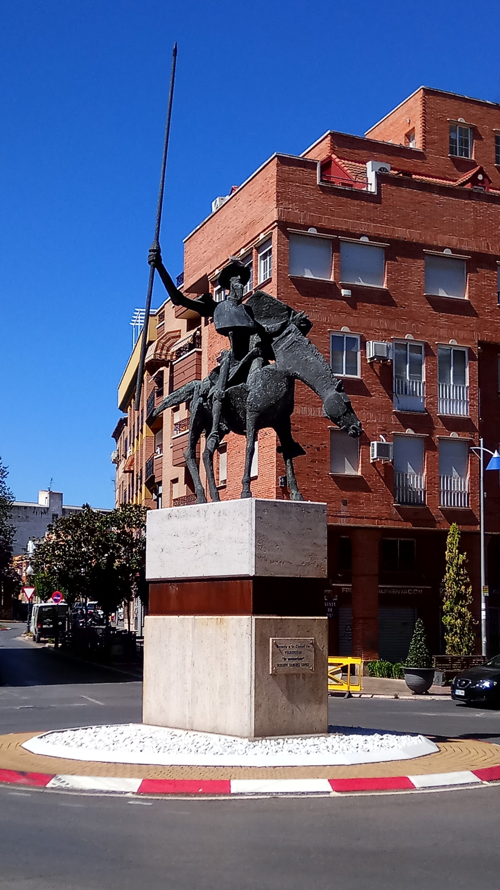
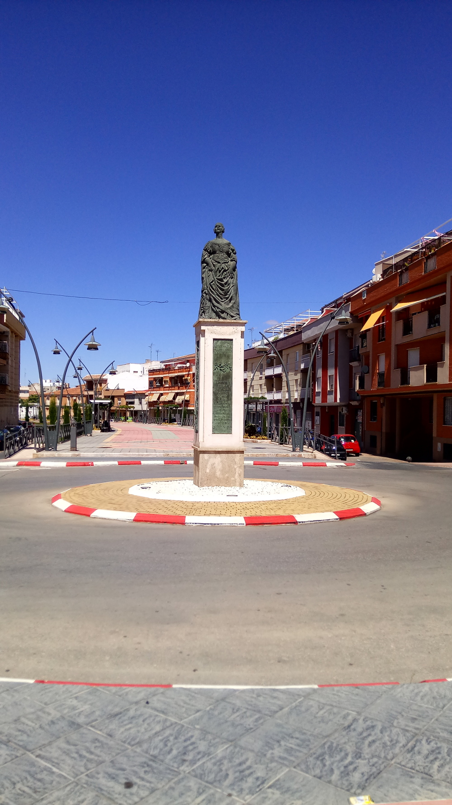
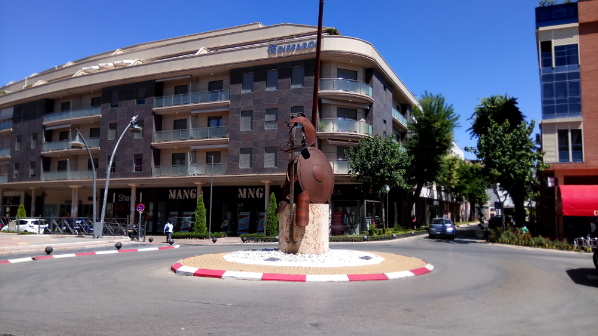

Para hacer las travesias más atractivas se instauraron en cada rotonda que separa el canal unas estatuas conmemorativas del Quijote




La mayoria de las esculturas han sido realizadas por escultores valdepeñeros.